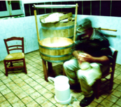

Lama Film


SYNOPSIS
Paesologo for a Living is a documentary film about a very particular and ‘new’ author on the Italian literary and poetic landscape.
Franco Arminio lives and works in eastern Irpinia. He has invented a new form of literature and a new discipline: “paesology”, an indispensible but non-existent branch of learning. He’s unable to live in Bisaccia, and yet is unable to leave it. He wanders through remote, abandoned towns, those where only the frailest have remained, because most of the people have left to “look for life”. He’s a fisherman of desolation, in his meanderings lies the search for the pure and profound innocence of a world which totally changed after the earthquake of 1980. The film is a journey into Arminio’s life and world, a collage of encounters by the author in the towns of the Irpinia and Lucania regions, to which are added his reflections and thoughts regarding small towns. Arminio has a great capacity to live and identify with the people me meets. With a attitude which is a mixture of grotesque cynicism and lucid analysis, he is able to understand and show a world that no one tells tales of any longer. With in-depth irony he helps us see that these desolate places should be rewarded, for not having participated in the cultural and social pillaging which has taken place in the west and he invites us to go to these towns, before it’s too late, “before the projector is turned off”. In his travelling among empty squares, dusty bars and deserted streets, he meet a series of characters who should be listened to. It’s a pilgrimage among the words of people who’ve not talked about themselves in years. And so, in Santomenna, he encounters four people sitting in the square who are waiting for someone to let them talk: an emigrant from Venezuela, another who lived in the United States and has returned to the town, an old farmer. And from the encounter with these solitary souls, flows a lucid, merciless analysis on the disappearance of the peasant world. From here, a journey takes him to snack bars in which even pasta and tuna are sold, to the town market places, to the street in which the only remaining inhabitants are the elderly and people who live alone. But it’s an approach that always takes place with love and passion, with the knowledge that the writer is seeing those places perhaps on the brink of their disappearance. That’s why his analysis often becomes ironic and sometimes cynical, making Belpoliti write: “Arminio is the funniest writer that’s ever existed”. His is a cry of alarm and for help, to prevent small towns from becoming open madhouses or worse, elephant cemeteries. His poetics are midway between Giustino Fortunato’s cynism and Guido Dorso and Danilo Dolci’s hope and utopia.
As Arminio himself says at the end of the film “it’s a sorrow which fights”, the sorrow for a world you deeply love, and which is becoming extinct.
production: Lama Film
producer: Cesare Apolito
script & direct : Andrea D’Ambrosio
with: Franco Arminio
fotografy: Luca Alzani
editing: Marco Chimenti
sound editing: Matteo Pedani
original music: Paranza Vibes - edition Warner Music Chappell
print format: MiniDV PAL
Norm: PAL 4:3
Audio: Stereo RT LT
length: 59’
year: 2010
Paesologo for a living




prying and fascinating , the documentary shows Arminio trough his wandering. An ironic jorney, a precious work that’s worthy to be seen.
Carlo Griseri - Trento Film Festival - May 2010